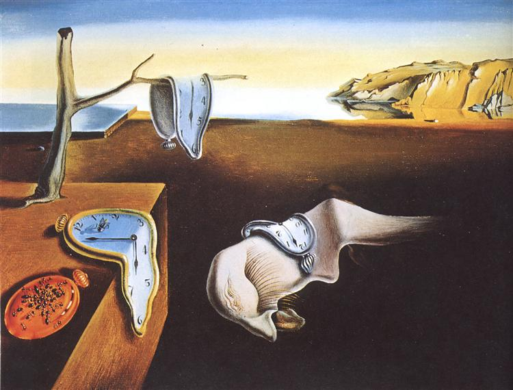

Analisi 1 - Canale 4 (Lb-O)
A.A. 2025-2026
Ingegneria -
Università di Roma "Tor Vergata"
Ad un'osservazione superficiale la matematica dà l'impressione di essere
il risultato degli sforzi individuali separati di molte migliaia di studiosi in
continenti ed epoche diversi. La logica interna del suo sviluppo, però,
assomiglia molto di più all'opera di un singolo intelletto, che sviluppa
il suo pensiero in modo continuo e sistematico, usando le differenti
individualità umane solo come mezzi. Fa pensare ad una orchestra
che esegua una sinfonia di un qualche autore. Il tema passa da uno
strumento all'altro e quando uno strumentista termina la sua parte,
questa viene ripresa da un altro esecutore che la sviluppa seguendo le
indicazioni dello spartito. (I.R. Shafarevich)
Scopo di questa pagina è cercare di dare un quadro del corso e rispondere a tutti gli eventali dubbi sulla sua organizzazione. Siete pregati di leggerla per avere informazioni su programmi, testi, modalità esame, etc. Nel caso mi giungano domande la cui risposta è contenuta qui e mi trovi oberato con altri compiti da svolgere, mi riservo di non rispondere alle richieste ridondanti.
Scopo di questa pagina è cercare di dare un quadro del corso e rispondere a tutti gli eventali dubbi sulla sua organizzazione. Siete pregati di leggerla per avere informazioni su programmi, testi, modalità esame, etc. Nel caso mi giungano domande la cui risposta è contenuta qui e mi trovi oberato con altri compiti da svolgere, mi riservo di non rispondere alle richieste ridondanti.

{kind=link}
{kind=link}
{kind=link}
Il corso è di 12 crediti e si è svolto tra il 23 settembre 2025 ed il 16 gennaio 2026.
Il titolare del corso è il prof. Riccardo Molle, che può essere contattato all'indirizzo e-mail molle@mat.uniroma2.it (non risponderò ad e-mail non firmate).
Vi sarà un tutorato tenuto dal Prof. Daniele Pasquazi, che può essere contattato all'indirizzo e-mail: pasquazi@mat.uniroma2.it.
Il tutorato saà svolto insieme agli studenti del canale 1 (A-Ca, Professor Morsella)
Orario lezioni - Aula 4:
Orario tutorato Analisi:
Il ricevimento verrà svolto il mercoledì in aula 4 dopo lezione (circa alle 15:40).
Possono essere richiesti via email altri ricevimenti, che si svolgeranno nel mio studio presso il dipartimento di matematica (Studio n. 1210).
Si segnala inoltre che la macroarea di ingegneria ha attivato degli ulteriori tutorati per chi non ha potuto seguire i precorsi. Il codice del canale TEAMS è alm3jjv Le lezioni si svolgeranno in aula A2, il martedì dalle 16:00 alle 17:45, dal 21 ottobre al 25 novembre.
Durante il corso saranno trattati i seguenti argomenti:
1. Insiemi Numerici e formalismi;
2. successioni;
3. funzioni reali di variabile reale;
4. limiti e continuità per funzioni reali;
5. calcolo differenziale;
6. numeri complessi;
7. calcolo integrale;
8. cenni sulle equazioni differenziali ordinarie.
Per seguire proficuamente il corso è necessario aver buona dimestichezza con gli argomenti svolti nelle scuole superiori. In particolare è richiesta una buona padronanza della trigonometria e una buona capacità a risolvere le equazioni, disequazioni e sistemi.
Il testo di riferimento sarà: M. Bertsch, A. Dall'Aglio e L. Giacomelli, "Epsilon 1. Primo corso di analisi matematica" (McGraw Hill).
Siccome il programma e le notazioni sono standard, andrà comunque bene un qualunque altro testo che affronti gli argomenti di questo corso.
Può essere utile guardare dimostrazioni e video divulgativi su youtube o altri siti web. Attenzione che alcuni video contengono errori e che difficilmente video trovati a caso sono ben calibrati per il nostro corso. L'utilità è nell'avere stimoli e materiale per un'analisi critica di quanto studiato.
Alcune dimostrazioni fatte non presenti sul libro sono standard e si trovano su web senza problemi. Per esempio la dimostrazione del binomio di Newton per induzione si trova scrivendo su google: "dimostrazione binomio Newton induzione".
Per esercizi relativi al corso va bene qualunque testo di esercizi di analisi matematica. Si possono anche cercare su internet, ove si trovano gran quantità di esercizi proposti ed anche svolti.
Alcuni ulteriori testi consultabili:
Teoria
- N. Fusco, P. Marcellini, C. Sbordone, Analisi matematica 1, Liguori (più sintetico e teorico del testo di riferimento)).
- E. Giusti, Analisi matematica 1, Bollati Boringhieri
- P. Marcellini, C. Sbordone, Esercizi di matematica, vol. 1, Liguori
- B. P. Demidovic, Esercizi e problemi di analisi matematica, Editori Riuniti
- E. Giusti, Esercizi e complementi di analisi matematica, Vol. 1, Bollati Boringhieri
Istruzioni per studenti CARIS.
Date degli esami scritti:
L'esame finale si compone di una prova scritta e di una orale (obbligatoria).
Potranno partecipare all'esame solo gli studenti che si iscriveranno regolarmente all'esame entro la scadenza delle iscrizioni, ovvero non accetterò iscrizioni tardive.
N.B. assicurarsi dell'avvenuta iscrizione. Non accetterò iscrizioni di chi sostiene che si era iscritto ma non aveva verificato l'effettiva iscrizione.
La prova scritta sarà in comune con tutti gli altri canali del corso di Analisi 1 per Ingegneria (compresa Ingegneria Informatica).
→ Possono sostenere l'esame con il Prof. Molle ESCLUSIVAMENTE gli studenti del canale Lb-O; sia alla prova scritta che a quella orale è necessario presentare il libretto universitario o un documento in corso di validità nel caso in cui non si abbia ancora il libretto.
→ È obbligatoria la prenotazione all'esame tramite il portale Delphi.
→ Sono previsti due appelli d'esame per ciascuna delle sessioni invernale (gennaio-febbraio), estiva (giugno-luglio) e autunnale (settembre); gli studenti possono usufuire di entrambi gli appelli previsti.
→ Si è ammessi alla prova orale se si è ottenuta una votazione sufficiente alla prova scritta (almeno 18/30).
→ La consegna dello scritto nel secondo appello (della stessa sessione) annulla la eventuale prova scritta del primo appello.
→ Durante gli esami non si possono usare: formulari, libri, appunti, calcolatrici o altri strumenti elettronici; inoltre i telefoni cellulari devono essere rigorosamente spenti, pena l'esclusione dalla prova.
→ È possibile ritirarsi dalla prova scritta non prima di due ore dall'inizio dello svolgimento.
Istruzioni consegnate insieme al testo dello scritto.
Superata la prova scritta si è ammessi a sostenere la prova orale in tutta la SESSIONE corrispondente (invernale, estiva, autunnale), ovvero si può tenere lo scritto del primo appello di una sessione per il secondo appello della STESSA sessione.
Se si passa lo scritto nel primo appello e si intende sostenere la prova orale nel secondo appello NON OCCORRE iscriversi anche al secondo appello.
Se non si passa la prova orale va rifatta anche la prova scritta
→ La prova orale verrà svolta alla lavagna e inizierà con un argomento a piacere, tra quelli scritti nel calendario del corso, la cui esposizione duri 10 minuti.
N.B. Durante l'esame verranno chiesti dettagli anche non spiegati ma che si presuppone siano stati elaborati dallo studente. Il libro di testo può essere un buon riferimento per spiegazioni ulteriori.
Tradotto, l'osservazione: "ma questo non è stato detto" non ha cittadinanza. Per esempio: se a lezione sono stati visti esercizi con limiti di successioni per n --> infinito, si presuppone che lo studente sappia riportare le medesime tecniche al caso di limiti di funzioni, in modo opportuno.
Superiori: prof. spiega 10 e chiede 1 - Università: prof. spiega 10 e chiede 12.
ESONERI: Sono previsti due esoneri della durata di due ore.
Se il secondo esonero non raggiunge la sufficienza (18) si dovrà rifare tutto lo scritto.
Gli studenti che passano gli esoneri dovranno sostenere la prova orale in un appello invernale (gennaio-febbraio), a scelta.
Istruzioni che verranno consegnate insieme al testo dell'esonero.
PRIMO ESONERO (28 novembre 2025):
testo e svolgimento primo turno; testo e svolgimento secondo turno.
SECONDO ESONERO (19 gennaio 2026):
testo e svolgimento.
PRIMO APPELLO (28 gennaio 2026):
testo e svolgimento.
SECONDO APPELLO (16 febbraio 2026):
testo e svolgimento.
TERZO APPELLO (15 giugno 2026):
testo e svolgimento.
QUARTO APPELLO (9 luglio 2026):
Testo e svolgimento.
QUINTO APPELLO (1 settembre 2026):
testo e svolgimento.
SESTO APPELLO (14 settembre 2026):
testo e svolgimento.
